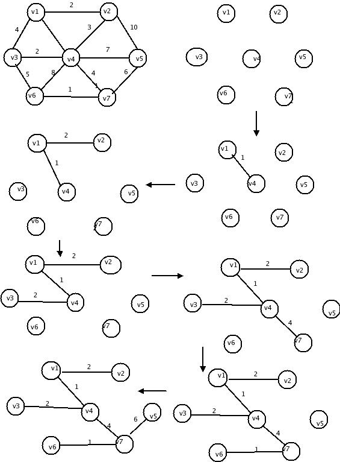

Spanning Tree
There is a common problem associated with weighted graphs that of finding
a minimal spanning tree for each connected component.
A spanning tree for an undirected graph G is a graph T consisting of the
nodes of G together with enough edges from G such that:
1)There is a path between each pair of nodes in T.
2)There are no simple cycle in T.
It should be clear that if G is connected if and only if there is
a spanning tree for G. Thus,there is a spanning tree for every connected
component of a graph.
If a graph G=(V,E) contain N nodes,then the spanning tree for that
graph contains N-1 edges.The edges of spanning tree are subset of E.
In general,it is possible to construct different spanning trees for
a graph,G.
For any spanning tree , we could pick any node as root and that
would provide a parent-child relationship for the nodes connected by each
node.
A “minimal spanning tree” for a weighted graph G is a spanning tree
such that the sum of its weights is less than or equal to the sum of its
heights of every other spanning tree for G. That is in a minimal spanning
tree the sum of weights of the edges is as small as possible.
All these are the spanning trees for the above graph G.
Suppose wij is weight associated to each edge eij of spanning tree Tspan
,then the minimum spanning tree is created such that
Tmin-span =sum{wij\all eij Є Espan}is a minimum.
There are several algorithms for creating minimum spanning tree for a
weighted graph.
The number of edges in the minimum spanning tree of a graph is
|V|-1.
Where V is the number of vertices.
The minimum spanning tree is a tree because it is acyclic,it is spanning
because it covers every edge,and it is minimum .Example for minimum
spanning tree is wire a house with a minimum spanning tree of a weighted
Graphs.
1)Prim’s Algorithm
2)krushkal’s Algorithm
Prim’s Algorithm:-
One way to compute a minimum spanning tree is to grow the tree in
successive stages. In each stage,one node is picked as a root,and we add an
edge,and thus an associated vertex,to the tree.
At any point,we can see that we have a set of vertices that have
already been included in the tree;the rest of vertices have not. The
algorithm then finds,at the edge (u,v) such that the cost of (u,v) is the
smallest among all edges where ‘u’ is in the tree and v is not.
In this we keep two values dv and pv and an indication of whether
it is known or unknown.
dv is the weight of the shortest arc connecting ‘v’ to know vertex.
pv is the last vertex to cause a change in dv.After a vertex ‘v’ is
selected,for each unknown ‘w’ adjacent to v,dv=min(dw,cw,v).

For the above graph initially v1 is in the tree as a root with no
edges. Each step add one edge and one vertex to the tree.
The initial configuration of the table is shown v1 is selected,and
v2,v3 and v4 are updated. The next vertex selected is v4.Every vertex is
adjacent to v4.v1 is not examined because it is known to.V2 is
unchanged,because it has dv=2 and the edge cost from v4 to v2is 3 all the
rest are updated. The next vertex chosen is v2.This does not affect any
distances. Then v3 is chosen,which affects the distance in v6.
The edges in the spanning tree can be read from the
table:(v2,v1),
(v3,v4),(v4,v1),(v5,v7),(v6,v7),(v7,v4). The total cost is
16.
kruskal’s Algorithm:-
It is continually selects the edges in order of smallest
weight and accept an edge if it does not cause a cycle. Formally,kruskal’s
algorithm maintains a forest – a collection of trees. Initially, there are
|v| single-node trees. Adding an edge merges two trees into one. When the
algorithm terminates, there is only one tree ,and this in the minimum
spanning tree.
The algorithm terminates when enough edges are accepted. It turns
out to be simple to decide whether edge (u,v) should be accepted or
rejected.
The invariant we will use is that at any point in the process, two
vertices belong to the same set if and only if they are connected in the
current spanning forest. Thus,each vertex is initially in its own set. If
u and v are in the same set, the edge is rejected,because since they are
already connected,adding (u,v) would form a cycle. Otherwise, the edge is
accepted,and a union is performed on the two sets containing u and v.
The worst-case running time of this algorithm is O(|E|log|E|).
We can start looking for all vertices that are a distance 1 away
from s. These can be found by looking at the vertices that are adjacent to
S. Like this v1 and v6 are one edge from S.
Back
Back To Main
|